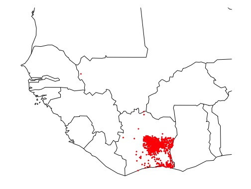
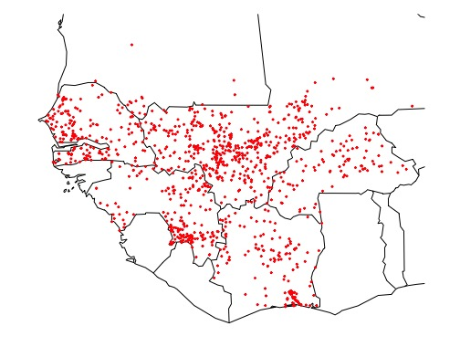
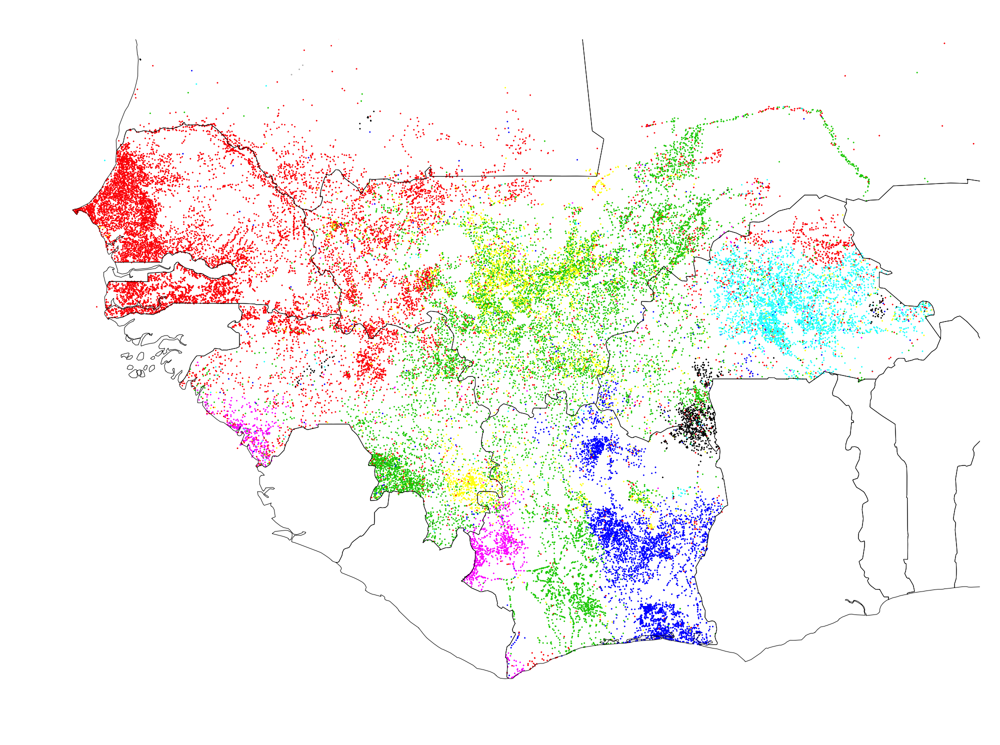

Using Graph Theory to Make Ethnic Maps
Ethnic Information From Toponyms
I've always been interested in mapping ethnic groups computationally, as I enjoy working with data that is both spatial and linguistic. I've been especially interested in mapping ethnic groups in West Africa using computational methods. I mapped ethnic groups in the Philippines based on
twitter data, but social media data is sparse in West Africa and is usually in French or English. Some corpora from local languages exist, but this is almost all aspatial - you couldn't map ethnic groups from it.
While doing my MA work in Mali, I noticed how many Bambara toponyms (aka place names) were based on plant names and other natural features. For example:
Dialakorobougou - the hut under the Mahogany tree.
Kurukan Fuga - the clearing on the hill.
Bamako - crocodile creek. My Peace Corps village -
Kissa - was named after the Kokissa tree. It occurred to me that toponyms are very spatial and they also encode ethno-linguistic information. While toponyms do not have nearly as much information as, say, a book or even a tweet, many of them do have distinct features that signify the ethnic group that created them. I realized that toponyms themselves could be used to make ethnic maps.
I initially tried to only map the Bambara within Mali, and had some success based only on certain combinations of letters that seemed distinctly Bambara. I made a
web app to explore these features and make these maps. I then began to wonder if I could map other languages, even if I didn't know specific features in those languages. I finally decided to create an algorithm that would classify toponyms based on natural groupings in spatial distance and lexical distance. I've finally had some success.
Why it's necessary
One significant issue with mapping ethnic groups is that it is sometimes difficult to know when to count related groups as distinct. For example, are the Austrians and the Saxons different ethnic groups, or are they both part of the larger German ethnic group? What about the Saxons and Bavarians?
In many parts of the world, these spatial distributions of ethnic groups often match political boundaries. This is because the borders of nation-states emerged through different groups contesting their borders, and because peoples' sense of which ethnic group they belonged to was affected by the nation-state that they lived in. So, most people might agree that the Austrians and Germans are more distinct than Bavarians and Saxons, because the Austrians and Germans occupy different nation states, while Bavarians and Saxons both live in Germany.
However, in Africa the boundaries of nation states were drawn by colonial powers, nearly always irrespective of pre-existing ethno-political boundaries, and these nation states have not yet existed for a full generation. Thus, making a continental scale map is incredibly fraught. Not only are political boundaries irrelevant, but the cartographer must make a thousand decisions about whether the Baoulé and the Akan of Côte d'Ivoire are more distinct than the Malinké and the Bambara of Mali, or whether the many different Dogon groups, with many mutually unintelligible languages, some with only a few hundred speakers, count as one ethnic group or many. These issues are exacerbated in parts of the world where precise spatial data is sparse.
Due to the daunting nature of this task, there are not many ethnic maps of West Africa, and they are often pretty unsatisfying. Most maps of Africa are based on either one map made in the 1950s by an American anthropologist named George Murdock. Christian groups, like SIL and the Joshua Project, also make ethnic maps of Africa, as they are interested in reaching as many non-Christians in as many languages as possible.
In trying to figure out the locations of ethnic groups in the areas I worked in Mali, I found both academic and missionary maps to be unsatisfying, vague, and contradictory. They often follow political boundaries, showing the Bambara to end at the Mali border and Malinké to start in Guinea, or make classifications that significantly contradict what I have experienced on the ground over several years of working in the region. For example, the Murdock map identifies the Dyula as an ethnic group inhabiting a small corner of Côte d'Ivoire. However, in my experience, Dyula is a trade language spoken throughout much of Côte d'Ivoire, Mali, and Burkina Faso. The people of Kissa, a village in Southern Mali where I lived for a year, most often described their own language as Dyula and called themselves Dyula people. In fact, the Dyula are not really considered a distinct ethnic group, but rather the word Dyula means "trader" in many Mandé languages.
So why is this important? When issues like conflict and corruption are causing suffering in Africa, why would we care about something arcane like the distribution of ethnic groups? Well, a lot of work has been done addressing the causes and extent of these problems, and these analyses rely on data about ethnic groups.
Researchers have examined whether ethnic diversity in developing countries, and in Africa in particular, can hamper economic development and lead to conflict. Scientists disagree, although many analyses use the Murdock map. See some of this research
here,
here and
here.
Another study, recently published in
science, looked at Internet penetration in areas where politically excluded ethnic groups live. They found that groups without political power were often marginalized in terms of internet service provision. However, their data for West Africa was quite rough: all of southern Mali was one ethnic group labeled "blacks" while the north was labeled as "Tuaregs" or "Arabs", while there was no data at all for Burkina Faso. Better ethnic maps could help us better address these critical questions.
Methods
I used toponyms for six countries in French West Africa. I decided to focus on French West Africa for several reasons. For one, I have worked there, and have some familiarity with the ethnic groups of the region and their distributions, and it is an area I am very curious about. For another thing, this is a relatively poorly documented part of the world as far as ethno-linguistic groups go, and it is an area with significant region-scale ethnic diversity. Finally, the countries I selected were colonized by one group, meaning that all of the toponyms were transliterated the same way and could be compared even across national borders.
I got my data from the
geonames dataset, and I selected all of the toponyms for populated places that were over six characters long. This left me with 35,785 toponyms. Because the computations that I had to do with this dataset used a lot of memory, I purchased several hours of a server from Amazon Web Services that had 60GB of memory.
Getting 3-grams with spatial clustering
First, I got a list of every possible set of three letters (called a 3-gram) from the toponyms. To distinguish word-initial, word-final, and medial 3-grams, I capitalized the first and last letter of each toponym. This meant that the 3-gram "Bou", from the toponym "Bougouni" and the 3-gram "bou" from "Sirabougou" would be distinct.
Then, I tested for spatial autocorrelation in the locations that contained each 3-gram using a Moran's I test, and selected only those 3-grams that had significant clustering. Running a Moran's I test is computationally intensive, and I had to run it 9,216 times for a 35,000-point dataset. The bulk of the computation involves calculating the matrix cross-product, and since this was the same for each of the 30grams, I was able to modify the Moran.I function in R's ape package so that I would only have to calculate this matrix cross-product once.
Here are two examples of the spatial distribution 3-grams. One 3-gram - "ama" - occurs roughly evenly throughout the regions in this study. The other 3-gram - "kro" - is very common in toponyms in south-east Côte d'Ivoire, and virtually nonexistent in other areas. Thus, "kro" has significant spatial autocorrelation whereas "ama" does not.

Here are all of the toponyms that contain the 3-gram "kro"

And here are all of the toponyms that contain the 3-gram "ama"
Thus, the the 3-gram "ama" doesn't tell us much about which ethnic group a toponym belongs to, because that 3-gram is found evenly distributed throughout West Africa - it is just noise. The 3-gram "kro", on the other hand, carries information about which ethnic group a toponym belongs to, becuase it is clearly clustered in a group in Southeast Côte d'Ivoire.
Creating a graph
I then calculated the lexical distance between all of the toponyms based on the number shared 3-grams that had significant spatial autocorrelation. The measure of distance I used was the Jaccard distance.
All toponyms with a Jaccard distance of less than 0.75 were then linked in a network, or graph. To add a spatial component, I also linked any two toponyms that were less than 25 kilometers apart. Thus, I had a graph where every toponym was a vertex, and undirected edges connected toponyms that had spatial or lexical affinity.
Next, I wanted to detect communities, or clusters, in this graph. After removing a few small isolated communities, I ran a some algorithms to detect communities in the graph using the igraph package in R. I tried many different algorithms, although I found that a fast greedy modularity-optimizing algorithm worked the best.
All of my code is available on my github page at
github.com/mcooper/village-names
Results
The algorithm found seven distinct communities, which definitely correspond to ethnic groups and ethnic macro-groups in West Africa.

The red cluster includes Wolof, Serer, and Fulfulde place names, which makes sense, as all of these groups are Senegambian languages. This group of languages is the primary group in Senegal and Mauritania, which my classification picked up on. It also caught the large Fulfulde presence in central Guinea, throughout an area known as the Fouta-Djallon. This cluster also has a significant presence throughout the Sahel, stretching into Burkina Faso and dotted throughout the rest of West Africa, much like the migrant Fulfulde people
The green cluster captures most of the area where Mandé languages are spoken, including most of Mali, where the Bambara are found, as well as Eastern Guinea and Northern Côte d'Ivoire, where Malinké is found. Interestingly, most of the toponyms in Western Mali fell into the Senegambian/Fulfulde cluster, and were not in the Mandé cluster, even though there are Mandé groups like the Soninké and Khassonké in Western Mali. Southern Guinea is densely green, representing the presence of Mandé groups there, like the Kuranko. Surprisingly, much of central and southern Côte d'Ivoire also fell into the green cluster, even through there are a couple of different groups there which are not in any way related to the Mandé groups that were most represented in the green cluster. This is also true of areas in Western Burkina Faso and Eastern Mali, where there are many languages unrelated to the broader Mandé group, such as Dogon, Bobo, Minianka, and Senufo/Syempire. However, I know that Dyula, a Mandé language closely related to Bambara, is spoken as a trade language in both of these areas (Côte d'Ivoire and Western Burkina Faso). It could be that Dyula has had a long enough presence in these areas to leave an imprint on the toponyms there.
The purple group pretty clearly captured two different disjoint groups that are both in the broader Mandé group - the Susu, in far Western Guinea, and the Dan, in Western Côte d'Ivoire. These groups are normally classified as being on quite separate branches of the Mandé language family, with the Susu being Northern Mandé and Dan being Eastern Mandé. However, the fact that the algorithm put them in the same group, even though they were too far apart to have edges/connections based on spatial affinity, shows that Dan and Susu toponyms have several three-grams common.
The yellow cluster seems to have caught two sub-groups within the broader green/Mandé cluster. Many of the yellow toponyms in central Mali are in what you could call the Bambara homeland, between Bamako and Segou. However, a second cluster stands out quite distinctly in southern Guinea. It's unclear to me what group this could represent and why it would have toponymic features distinct enough from its neighbors that the algorithm put it in a different cluster. The SIL map says that a group called the Konyanka lives here and speaks a language closely related to Malinké.
The turquoise cluster quite clearly captures the Mossi people and their toponyms, as well as the Gurunsi, a related group (both Mossi and Gurunsi are classified as Gur languages).
The black cluster in southern Burkina Faso captured a group that most national ethno-linguistic maps call the Lobi, although this part of West Africa is known for its significant entho-linguistic heterogeneity. Another group of villages in Eastern Burkina Faso also fell into the black cluster, although I could not find any significant ethnic group found there.
Finally, the blue cluster captured both the Baoulé/Akan languages as well as the Senufo. It captured the Senufo especially in Côte d'Ivoire and somewhat in Burkina Faso, but not much in Mali, where I know the Senufo have a significant presence. This could represent a Bambarization of previously Senufo toponyms due to the fact that the government of Mali is predominantly Bambara, or it could pre-date the Malian state, as this area was part of Samori Toure's Wassoulou Empire, in which the Malinké language was strongly enforced. The classification of the Senufo languages has always been controversial, but this toponymic analysis suggests that they are more related to Kwa toponyms to the south rather than to Gur toponyms to the northeast.
Caveats
Some caveats with this work and its interpretation. For one, this only shows toponymic affinities. Those affinities usually correspond to ethnic distributions, but not always. There is a lot of migration in West Africa today, and place names don't usually change as quickly as the distributions of people. Thus, toponyms can sometimes encode historic ethnic distributions, for example many toponyms in the United States come from Native American languages, and there are many toponym suffixes in England that reflect
a historic Nordic presence. Thus, this and similar maps are most informative when interpreted in combination with on-the-ground information and knowledge.
Another issue with classifying toponyms in West Africa in particular is that West African toponyms are transcribed using the Latin alphabet, which definitely does not capture all of the sounds that exist in West African languages. Different extensions of the Latin alphabet, as well as
an indigenous alphabet, are often used to transcribe these languages, however these idiosyncratic methods of writing languages are not used in the geonames dataset. Thus, the Fulfulde bilabial implosive (/ɓ/ in IPA) is written the same way as a pulmonic bilabial plosive - as a "b", so this distinction is lost in our dataset, even though it adds a lot of information about what ethnic group a given toponym belongs to. However, some other sounds and sound combinations, which are very indicative of specific languages are captured using a Latin alphabet- for example prenasalized consonants (/mb/) common in Senegambian languages, labial velars (/gb/ and /kp/) common in coastal languages, or the lack of a 'v' in Mandé languages. Issues also arise with how different colonizers transcribe sounds differently, for example 'ny' and 'kwa' in English would be 'gn' and 'coua' in French. However, this didn't apply in this analysis, which only used Francophone countries, and I believe it could be dealt with if I tried to do a larger analysis.
Future Work
I think it would be very interesting to do this in other countries. Other parts of Africa are quite deserving of analysis, and are just as under-explored as West Africa. It would also be interesting to look at a part of the world where the distribution of and affinities between enthno-linguistic groups are well understood, as a way to validate the algorithm.
Some work could be done to optimize the parameters used in the algorithm - what it we used 2- or 4-grams? What if assigned spatial affinity based on a 15km radius? Or a 100km radius? What about a stricter cutoff for a Moran's I value when looking at clustering 3-grams, or a less strict cutoff for the Jaccard distance? There are many parameters that go into the algorithm that could be tweaked and yield very different results. The only issue with trying to optimize this classification is that we would need some sort of validation data, which would mean deciding how many ethnic groups to classify for as well as which subgroups get combined into macro group and which subgroups stand alone. I like that my current algorithm sidesteps these decisions by being unsupervised - it finds "natural" groups.
Overall, the biggest impediment to future work would be finding some money to cover the AWS costs. It costs about $20-$30 to run this script, so trying different combinations of slightly modified parameters could get expensive quick. We'll see how long my financial sense can hold back my curiosity before I start throwing wads of cash at AWS credits.

{kind=link}
{kind=link}
{kind=link}